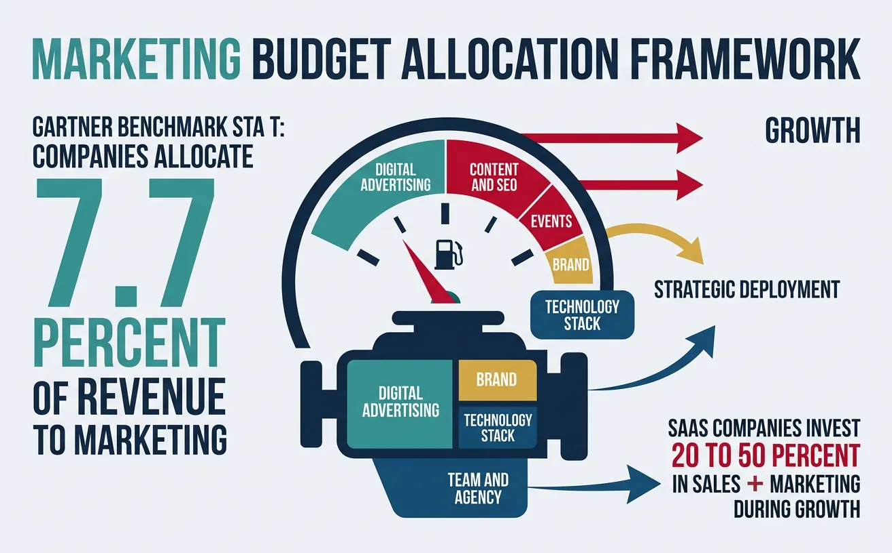
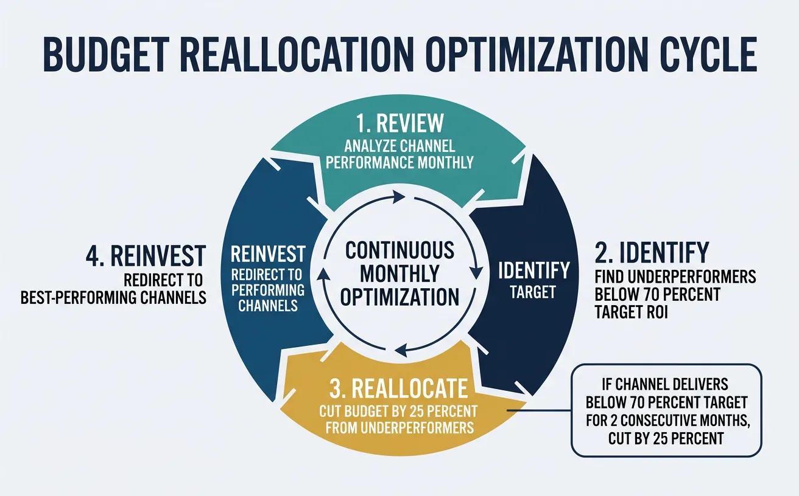
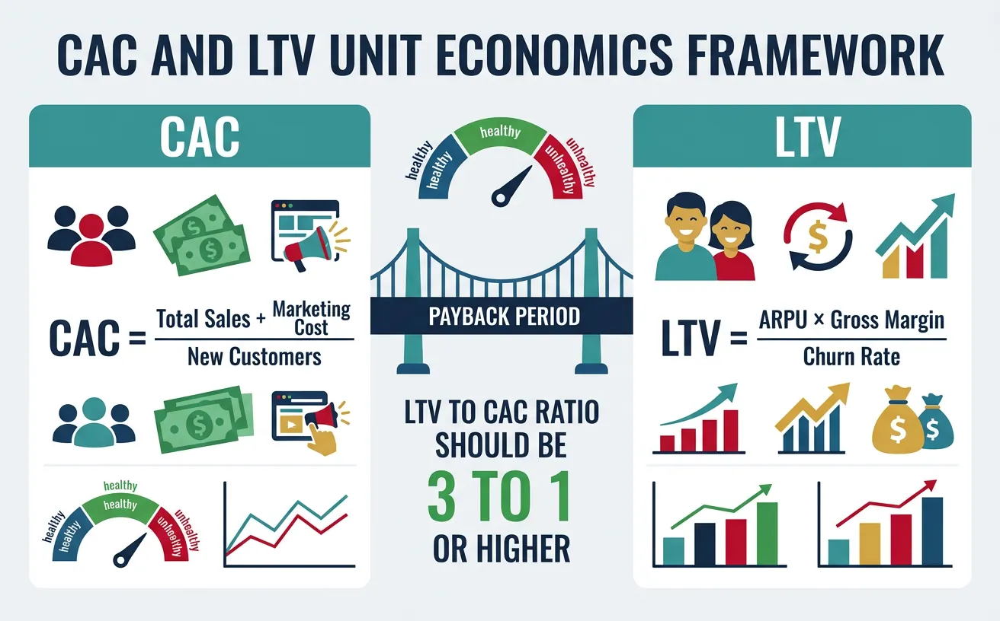
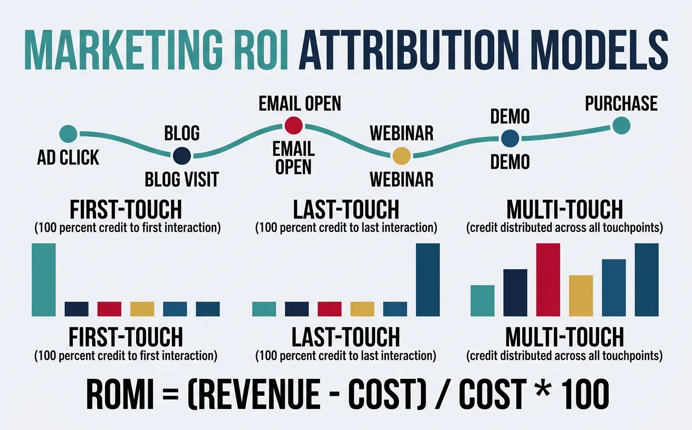
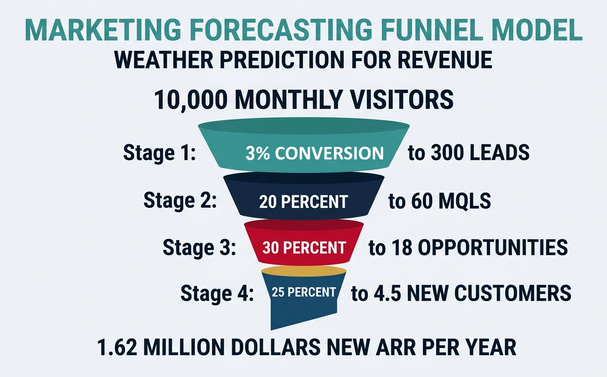

We use cookies to enhance your browsing experience, serve personalized content, and analyze our traffic.
By clicking "Accept All", you consent to our use of cookies. See our
Privacy Policy
for more information.
Think of a marketing budget as fuel for a growth engine. Too little fuel and you stall. Too much in the wrong tank and you waste resources while competitors pass you by. The best CMOs don't just spend money — they invest it with measurable returns the same way a portfolio manager allocates capital.

An effective marketing budget operates like fuel allocation in a growth engine — strategic deployment across channels maximizes returns
Budget Benchmark: Gartner's 2024 CMO Spend Survey found companies allocate 7.7% of total revenue to marketing (down from 11% in 2020). SaaS companies invest 20-50% of revenue in sales + marketing during growth phase, declining to 15-25% at maturity.
Two Budget Methodologies
Approach
How It Works
Best For
Limitation
Top-Down
CFO/CEO sets a total budget based on revenue %, then marketing allocates
Mature companies with predictable revenue
May not align with growth opportunities
Bottom-Up
Marketing builds budget from channel-level plans, aggregated upward
Data-rich orgs with channel-level ROI data
Can lead to budget bloat without governance
Zero-Based
Every dollar justified from scratch each cycle (not based on last year)
Companies needing efficiency gains
Time-intensive, can create uncertainty
Objective-Based
Budget reverse-engineered from revenue targets and conversion rates
Growth-stage with clear funnel data
Requires accurate conversion assumptions
Reverse-Engineering Formula:
Required Budget = (Revenue Target ÷ Average Deal Size) ÷ Close Rate ÷ MQL-to-Opp Rate × Cost per MQL
The 70-20-10 rule provides a practical starting framework for channel allocation:
Allocation
%
Focus
Examples
Proven Channels
70%
Channels with demonstrated, predictable ROI
Google Ads, SEO, email, content marketing
Emerging Channels
20%
Promising channels with growing data
LinkedIn Ads, influencer, podcasts, webinars
Experimental
10%
Unproven bets with high potential upside
AI tools, new platforms, community, partnerships
SaaS Budget Allocation Benchmarks (by Stage)
Category
Pre-Seed/Seed
Series A-B
Series C+
Public
S&M as % Revenue
80-120%
50-80%
30-50%
20-35%
Marketing Headcount
1-3
5-15
15-50
50-200+
Demand Gen
40-50%
35-45%
30-40%
25-35%
Content/SEO
20-30%
15-25%
10-20%
10-15%
Brand/PR
5-10%
10-15%
15-20%
15-25%
Events
5-10%
10-15%
15-20%
15-20%
Tools/Tech
10-15%
10-15%
8-12%
5-10%
Budget Optimization
Budget optimization isn't a once-a-year exercise — it's a continuous rebalancing act. The best marketing teams reallocate monthly based on performance data:

Budget optimization is a continuous rotation — monthly review, reallocation from underperformers, and reinvestment in winning channels
The Reallocation Rule: Review channel performance monthly. If a channel delivers <70% of target ROI for two consecutive months, cut budget by 25% and redirect to best-performing channels. If a channel delivers >150% of target ROI, increase budget by 20% until diminishing returns appear.
Case Study: Mailchimp's Efficient Growth ($12B Acquisition)
Bootstrap EfficiencyZero VC Funding
The Approach: Mailchimp grew to $12B acquisition value by Intuit (2021) with zero venture capital — meaning every marketing dollar had to earn its keep:
Free tier as marketing: 80%+ of signups came from the free plan — the product itself was the biggest marketing channel (effectively $0 CAC)
Brand over performance: Invested heavily in quirky brand campaigns (billboards, podcast ads, "Did You Mean Mailchimp?") that created 75%+ unaided brand awareness in their category
Word-of-mouth flywheel: The "Sent with Mailchimp" badge on free-tier emails generated billions of brand impressions annually — estimated $100M+ equivalent media value
Results: $800M+ revenue at acquisition, 13M+ active users, marketing spend at only 15% of revenue — roughly half the SaaS industry average — while maintaining 20%+ annual growth.
Unit Economics
CAC & LTV Fundamentals
Unit economics is the vital signs monitor of your business. Just as a doctor checks heart rate and blood pressure to assess health, investors and operators check CAC and LTV to assess business viability.

Unit economics health check: the relationships between Customer Acquisition Cost, Lifetime Value, and payback period determine business viability
Core Formulas: CAC = Total Sales + Marketing Spend ÷ New Customers Acquired LTV = ARPU × Gross Margin % × Average Customer Lifetime (in months) LTV:CAC Ratio = LTV ÷ CAC (target: 3:1 or higher) CAC Payback = CAC ÷ (ARPU × Gross Margin %) = months to recover acquisition cost
CAC Components
Component
Include?
Examples
Marketing Spend
Always
Ads, content, events, tools, agency fees
Marketing Salaries
Yes (fully loaded)
Marketing team comp + benefits + overhead
Sales Salaries
Yes (fully loaded)
AE/SDR comp + commissions + benefits
Sales Tools
Yes
CRM, sales engagement, call recording tools
Onboarding Costs
Sometimes (blended CAC)
Implementation, training, customer success
R&D / Product
No (separate metric)
Engineering, product management
LTV:CAC Benchmarks by Business Type
Business Model
Typical CAC
Typical LTV
Target LTV:CAC
CAC Payback
B2B SaaS (SMB)
$200-$1,000
$2,000-$10,000
3:1 – 5:1
6-12 months
B2B SaaS (Enterprise)
$5,000-$50,000
$50K-$500K+
3:1 – 10:1
12-18 months
E-commerce (DTC)
$30-$150
$100-$500
3:1 – 4:1
1-3 months
Marketplace
$50-$500
$500-$5,000
3:1 – 5:1
3-9 months
Consumer Subscription
$20-$100
$200-$1,000
3:1 – 5:1
3-6 months
Payback Periods
CAC payback period is arguably more important than LTV:CAC ratio because it measures cash flow risk. A 5:1 LTV:CAC sounds great, but if payback takes 36 months, you need enormous capital to fund growth.
The Cash Trap: If your CAC payback is 18 months and you're growing 100% YoY, you need 18 months of future customer payments upfront. This means fast growth actually burns more cash until payback is achieved. This is why so many fast-growing SaaS companies are unprofitable despite healthy unit economics.
Beyond CAC and LTV, several efficiency ratios reveal the overall health of your growth engine:
Metric
Formula
Good
Great
What It Tells You
Magic Number
Net New ARR ÷ Prior Quarter S&M Spend
> 0.75
> 1.0
Go-to-market efficiency (are you getting $1+ ARR per $1 spent?)
Burn Multiple
Net Burn ÷ Net New ARR
< 2.0
< 1.0
Capital efficiency (lower = more efficient)
Rule of 40
Revenue Growth % + Profit Margin %
> 40
> 60
Balance of growth and profitability
NRR
(Starting MRR + Expansion − Churn) ÷ Starting MRR
> 110%
> 130%
Organic revenue growth from existing customers
CAC Ratio
Sales + Marketing Spend ÷ Revenue
< 40%
< 25%
Overall efficiency of customer acquisition
Case Study: Datadog's Unit Economics Excellence ($50B+ Market Cap)
Net Revenue RetentionEfficient Growth
The Numbers (2023): Datadog demonstrates what elite SaaS unit economics look like:
Net Revenue Retention: 130%+ — existing customers spend 30%+ more each year
Magic Number: 1.2+ — generating $1.20 in new ARR for every $1 spent on S&M
Rule of 40: 55+ (25%+ growth + 30%+ margins)
CAC Payback: ~12 months — efficient for enterprise SaaS
Land-and-expand: Average customer uses 4.2 products (up from 1.5 at IPO)
Key Insight: Datadog's 130%+ NRR means they could stop all new customer acquisition and still grow 30% YoY. This is why NRR is considered the most important SaaS metric — it makes your growth engine self-reinforcing.
ROI Modeling
Marketing ROI Calculation
Marketing ROI (also called ROMI — Return on Marketing Investment) answers the fundamental question: "For every dollar we invest in marketing, how many dollars do we get back?"

Different attribution models credit different touchpoints — the choice of model significantly impacts how you perceive channel performance
Example: ($500,000 marketing-attributed revenue − $100,000 spend) ÷ $100,000 = 400% ROMI
(Every $1 invested generated $5 in revenue, or $4 in profit contribution)
Three ROI Perspectives
Perspective
Formula
When to Use
Limitation
Revenue-Based ROMI
(Revenue − Cost) ÷ Cost
Quick assessment, executive reporting
Doesn't account for COGS or delivery costs
Gross Margin ROMI
(Revenue × Margin% − Cost) ÷ Cost
True profitability analysis
Requires accurate margin data by segment
Multi-Period ROMI
NPV of future revenue stream ÷ Cost
Subscription businesses, long-term evaluation
Requires churn and expansion assumptions
Channel-Level ROI
Comparing channel ROI requires an apples-to-apples framework that accounts for different time horizons, contribution types, and attribution models:
Channel
Typical ROMI
Time to ROI
Measurement Confidence
Primary Contribution
Paid Search (Google Ads)
200-400%
Immediate
High (direct attribution)
Bottom-of-funnel capture
SEO / Content
500-1,000%+
6-12 months
Medium (multi-touch)
Top-of-funnel, compounding traffic
Email Marketing
3,600-4,200%
Immediate
High
Retention, nurturing, activation
Social Media (Organic)
300-600%
3-6 months
Low (attribution gaps)
Brand awareness, community
Social Media (Paid)
150-300%
Immediate
Medium
Demand gen, retargeting
Events
200-500%
1-6 months
Low (long sales cycles)
Pipeline acceleration, relationships
ABM Programs
300-800%
3-12 months
Medium
Enterprise pipeline
The Attribution Trap: Email's "4,200% ROI" is misleading because email typically converts already-warm leads generated by other channels. Without proper multi-touch attribution, you'll overinvest in conversion channels while starving the awareness channels that fill your funnel.
Incrementality Analysis
Incrementality testing answers the hardest ROI question: "Would this revenue have happened anyway, without the marketing spend?" This is the gold standard for separating correlation from causation.
Method
How It Works
Accuracy
Complexity
Holdout Test
Randomly suppress marketing to a control group, compare conversion rates
Very High
Medium
Geo-Lift Test
Run marketing in some regions but not others, measure lift difference
High
Medium-High
Ghost Ads
Track users who would have seen your ad but didn't (attribution platforms)
Medium-High
Low
Switchback Test
Alternate marketing on/off in time periods, measure impact
Medium
Medium
PSA (Public Service) Test
Replace your ads with charity PSAs, compare conversion of control vs. test
High
Medium
Case Study: Airbnb's $540M Marketing Experiment
Incrementality TestingChannel Reallocation
The Experiment: During COVID-19 (2020), Airbnb was forced to cut marketing spend by $541M (58%) — creating the largest unintentional incrementality test in marketing history:
Performance marketing cut: Reduced Google/Meta spend by 80%+
Discovered: 90%+ of "branded search" traffic came organically — they had been paying for clicks they would have gotten for free
Revenue impact: Only 5% traffic decline despite 58% budget cut — proving most performance spend was non-incremental
Permanent shift: Reallocated budget from performance to brand marketing (TV, PR, social campaigns)
Results: Airbnb went public at $47B valuation (Dec 2020), achieved profitability, and now spends 20% of revenue on S&M (down from 35%). Marketing efficiency improved by 40%+ with actual revenue impact near-zero — proving that most of their performance marketing spend was not incremental.
Financial Planning
Marketing Forecasting
Marketing forecasting is weather prediction for revenue — you're modeling future outcomes based on historical patterns, current conditions, and leading indicators:

Funnel-based forecasting converts top-of-funnel traffic into revenue predictions through stage-by-stage conversion rates
Forecasting Method
Approach
Accuracy
Best For
Historical Trendline
Project forward from 6-12 months of data
Medium
Stable, mature businesses
Funnel-Based
Model each funnel stage: traffic → leads → MQLs → opps → closed
High
B2B with consistent funnel data
Cohort-Based
Project based on customer cohort behavior patterns
High
Subscription/SaaS businesses
Leading Indicators
Use early signals (website traffic, demo requests) to predict revenue
Medium-High
Companies with clear leading indicators
Bottom-Up (Rep-Level)
Aggregate individual sales rep forecasts
Medium
Sales-led organizations
Funnel-Based Forecast Example:
10,000 monthly visitors × 3% conversion = 300 leads
300 leads × 20% MQL rate = 60 MQLs
60 MQLs × 30% opp rate = 18 opportunities
18 opps × 25% close rate = 4.5 new customers/month
4.5 × $30K ACV = $135K new MRR/month = $1.62M new ARR per year
Scenario Models
Every marketing plan should include three scenarios — because the future never matches the plan exactly:
Scenario
Assumptions
Budget Impact
Revenue Impact
Action Triggers
Bull Case (+)
All channels exceed targets, market tailwinds
+20-30% (invest more)
+30-50%
Hit 120%+ of Q1 targets
Base Case (=)
Most channels on plan, normal market conditions
As planned
Plan target
Within 90-110% of targets
Bear Case (−)
Market downturn, channels underperform
−20-30% (cut non-essential)
−20-40%
Below 80% of targets for 2+ months
Sensitivity Analysis
Test which variables have the biggest impact on outcomes by changing one at a time:
Variable
Base Case
−20% Change
Revenue Impact
Sensitivity
Website Traffic
50K/month
40K/month
−$324K ARR
Medium
Lead Conversion Rate
3%
2.4%
−$324K ARR
Medium
Close Rate
25%
20%
−$324K ARR
Medium
Deal Size (ACV)
$30K
$24K
−$324K ARR
Medium
Churn Rate
5%/yr
6%/yr
−$162K ARR (compounding)
High (compounds)
Board Reporting
Presenting marketing results to your board or executive team requires speaking the language of finance, not marketing jargon. The best CMOs present like CFOs:
What the Board Cares About
Marketing Metric
How to Present It
Revenue Growth
Marketing-sourced + influenced revenue
"Marketing contributed $X.XM pipeline, $X.XM closed (XX% of total)"
Efficiency
CAC, Magic Number, CAC Payback
"CAC decreased 15% QoQ to $X,XXX. Payback is now X months"
Future Pipeline
Pipeline coverage, MQL velocity
"3.2x pipeline coverage vs 3.0x target. MQL volume up 20% QoQ"
Competitive Position
Win rate, market share, brand metrics
"Win rate vs [competitor] improved from 35% to 48% this quarter"
Risks
Channel dependency, seasonality, macro
"60% of leads from Google Ads — diversifying with SEO/content program"
Board Communication Rule: Never present activities (posts published, emails sent, events attended). Always present outcomes (pipeline generated, deals influenced, revenue attributed). If you can't tie a metric to revenue within two steps, don't put it in a board deck.
Case Study: Shopify's Marketing Finance Discipline ($100B+ Company)
Operator MindsetPath to Profitability
The Transformation (2022-2024): Shopify's pivot from growth-at-all-costs to efficient growth provides a masterclass in marketing finance discipline:
Workforce reduction: Cut 20%+ of staff (1,000+ roles), including marketing, forcing brutal prioritization
Budget reallocation: Shifted from brand/awareness campaigns to bottom-of-funnel, high-ROMI channels
Margin focus: Increased gross margin from 52% to 58% while cutting S&M spend as % of revenue from 35% to 25%
Rule of 40: Achieved Rule of 40 score of 55+ (20%+ growth + 35%+ margin) — up from negative territory in 2022
Results: $7.1B revenue (2023), $100B+ market cap recovery, free cash flow margin of 12%+ (vs. negative in 2022). Shopify proved that disciplined marketing finance — cutting waste while protecting high-ROI channels — delivers both growth and profitability.
Tools & Practice
Marketing Finance Canvas
Build your marketing financial plan. Download as Word, Excel, PDF, or PowerPoint.
Draft auto-saved
All data stays in your browser. Nothing is sent to or stored on any server.
Practice Exercises
Exercise 1: Calculate Your Unit Economics
Using real or hypothetical data for a SaaS business:
Calculate blended CAC (total S&M spend ÷ new customers)
Calculate LTV using ARPU × Gross Margin × Average Lifetime
Determine your LTV:CAC ratio and CAC payback period
Compare against benchmarks — where do you stand?
Identify 3 levers to improve unit economics (reduce CAC or increase LTV)
Exercise 2: Build a Scenario Model
Create bull/base/bear scenarios for a marketing plan:
Define base case assumptions for traffic, conversion, close rate, deal size
Model a +20% (bull) and −20% (bear) variation for each variable
Calculate revenue impact of each scenario
Identify the most sensitive variable (which ±20% change has the biggest impact?)
Write action triggers: at what threshold do you switch from base to bull or bear playbook?
Exercise 3: Board-Ready Marketing Report
Create a one-page marketing performance summary for a board meeting:
List the top 5 metrics that matter (revenue-connected only)
Show trend data (this quarter vs. last quarter vs. same quarter last year)
Highlight 2 wins and 1 risk with clear business impact
Present next quarter's investment request with expected ROI
Include one competitive insight that justifies increased investment
Key Takeaways
8 Marketing Finance Essentials:
Reverse-engineer your budget — start from revenue targets and work backward through funnel conversion rates